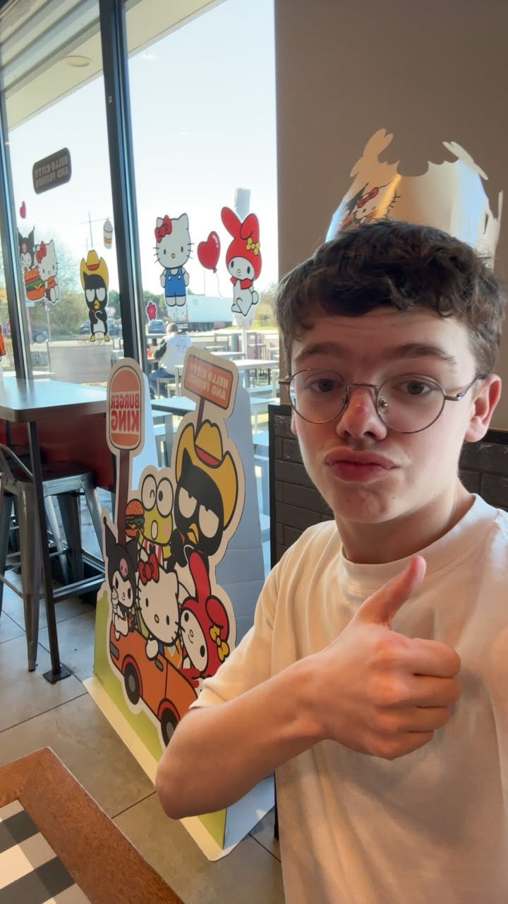

À propos de moi
Je m'appelle Paul, j'ai 16 ans. J'ai toujours été passionné par l'informatique, c'est pour cela que je fais mon stage de seconde chez Epitech.

Je m'appelle Paul, j'ai 16 ans. J'ai toujours été passionné par l'informatique, c'est pour cela que je fais mon stage de seconde chez Epitech.
Mes passions sont le sport, l'informatique et les jeux vidéo. Je fais du sport 6 jours sur 7, je joue aux jeux vidéo tous les soirs et je code régulièrement seul pour progresser.
Mon objectif est de faire un bac STI2D puis un BTS en cybersécurité. Plusieurs établissements proposent cette formation, notamment à Lens, Arras ou Lille.
Y'a quelques moments de ça, j'ai créé un serveur FiveM. Je ne code pas du tout donc je prends des scripts déjà faits mais arrivés à un moment
les scripts bugger
donc j'ai dû toucher un peu et c'est là que j'ai commencé à créer mes scripts même si cela n'est pas arrivé à terme, que les scripts que j'ai créés n'ont jamais été créés
j'ai déjà réussi à ouvrir un serveur (allez voir le bouton FiveM)